About Minecraft Bedrock
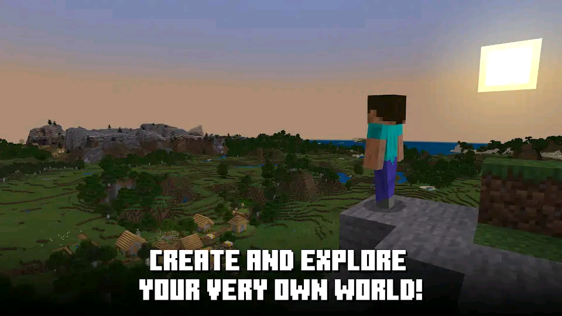
Explore infinite worlds and build everything from the simplest of homes to the grandest of castles. Play in creative mode with unlimited resources or mine deep into the world in survival mode, crafting weapons and armor to fend off dangerous mobs. Create, explore and survive alone or with friends on mobile devices or Windows 10.
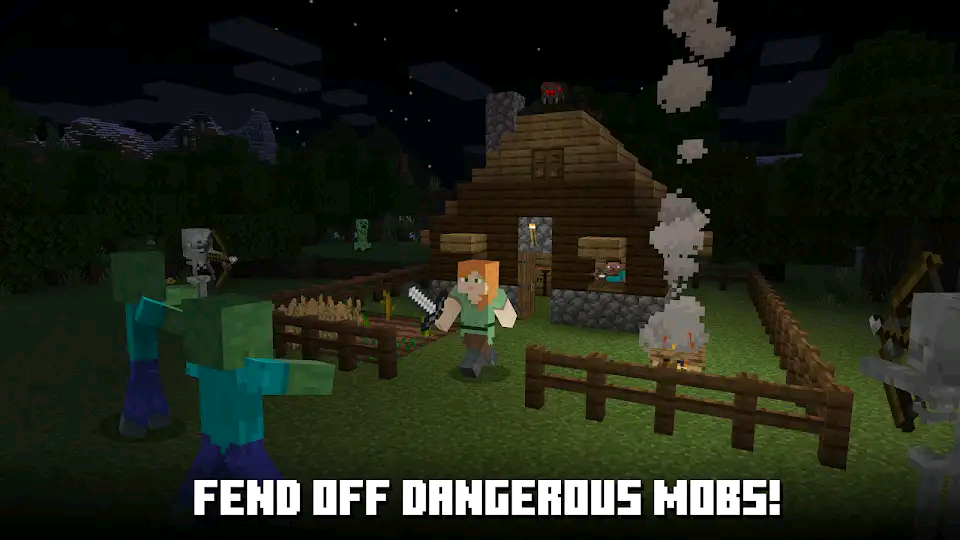
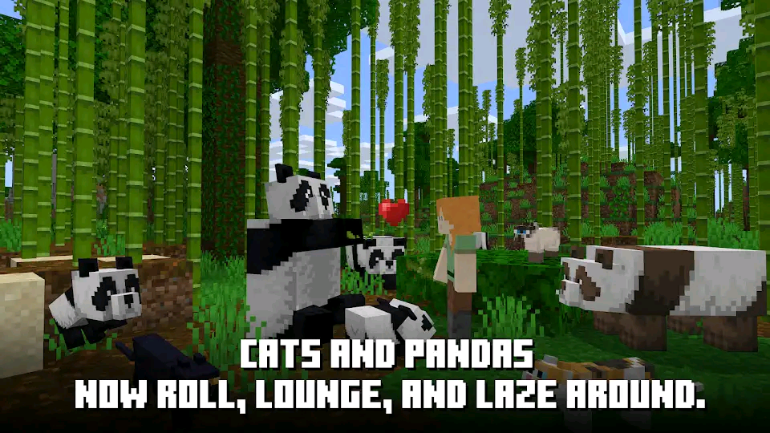
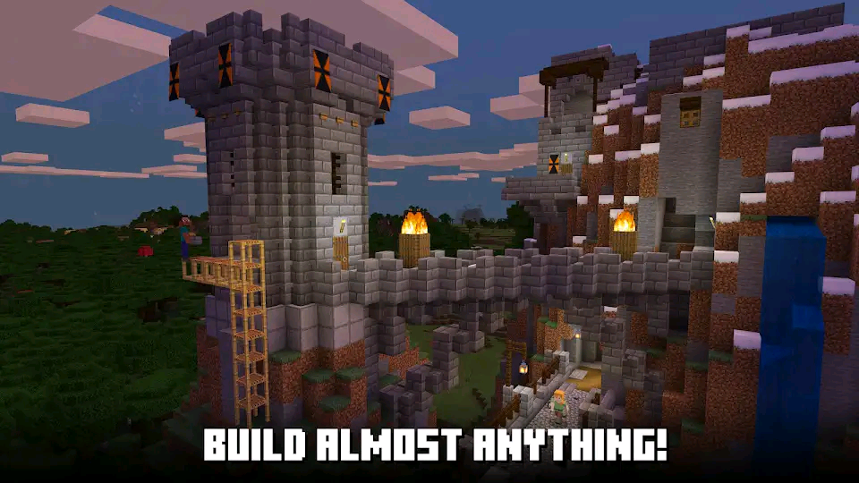
EXPAND YOUR GAME :
Marketplace - Discover the latest community creations in the marketplace! Get unique maps, skins, and texture packs from your favorite creators.
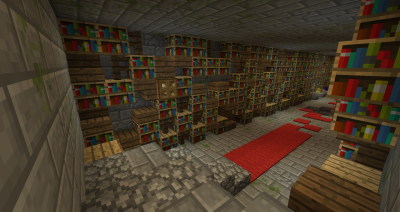
Slash commands - Tweak how the game plays: you can give items away, summon mobs, change the time of day, and more.
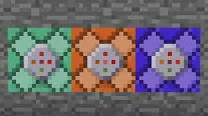
Add-Ons - Customize your experience even further with free Add-Ons! If you're more tech-inclined, you can modify data-driven behaviors in the game to create new resource packs.
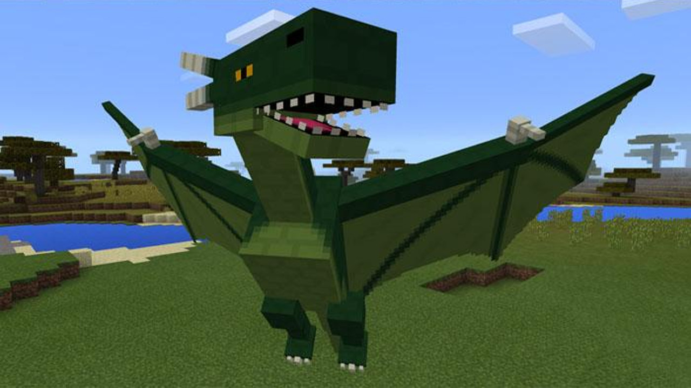
MULTIPLAYER
Realms - Play with up to 10 friends cross-platform, anytime, anywhere on Realms, your own private server that we host for you. Try a free 30-day trial in-app.
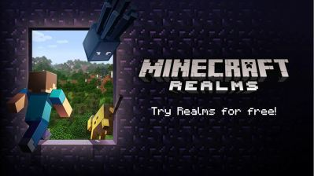
Multiplayer - Play with up to 4 friends with a free Xbox Live account online.
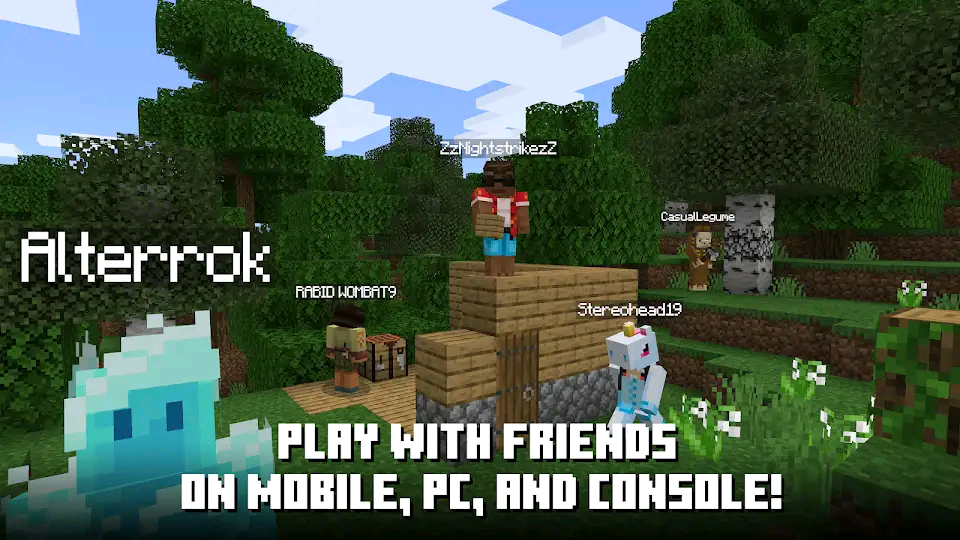
Servers - Join free massive multiplayer servers and play with thousands of others! Discover gigantic community-run worlds, compete in unique mini-games and socialize in lobbies full of new friends!
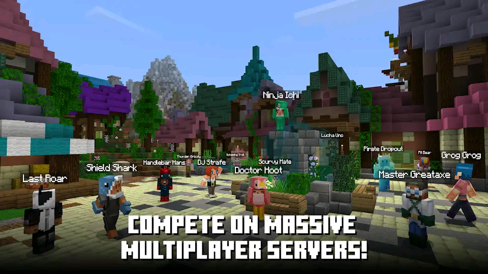
Bedrock Unknown Facts
1. OverWorld
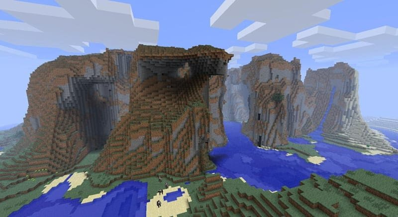
In the most recent builds, the Minecraft overworld is able to generate nearly indefinitely. However, the player isn't able to make use of the infinite map under normal circumstances; the world generates an invisible barrier that’s 30 (though some sources state 32) million blocks in each direction from the centre of the map .
Using modifications or other dubious means, one can see that the world generation beyond the normal 'edge' becomes simplified and sometimes distorted. According to some sources, if a Minecraft block was recreated in real life, it would be 1 metre cubed in size. Assuming this is correct, the explorable Minecraft overworld is bigger than some planets!
2. Creepy Stuff
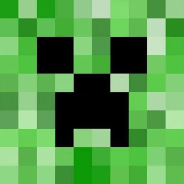
The iconic Creeper monster was actually created from a coding error. In a Twitter conversation in February of this year, Minecraft developer Nathan ‘Dinnerbone’ Adams responded to a fan enquiring about the Creeper's origins, stating how they were born from Notch accidentally swapping the height and length values when generating a pig.
3. Herobrine
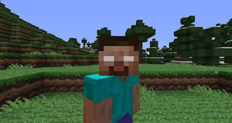
Early in Minecraft's life, many users began reporting strange happenings and sightings of a mysterious figure in the distance that was apparently following them. This entity - which looked like the default player character, only with ghostly white eyes - was known as Herobrine. Herobrine has been the subject of many a horror story, being able to possess a will of its own that far exceeds that of other AI characters.
Despite appearing in the background of some official promotional material and being the subject of a cheeky reference now and again, Herobrine actually isn't present in the normal Minecraft game at all. Or so we think...
4. Splashing Out
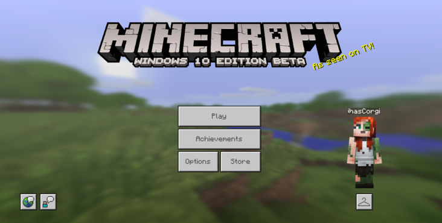
On the Minecraft title screen, there's a small yellow piece of text known as a 'splash'. They're randomly generated and contain a whole host of cool references. Some examples include: "Gargamel plays it!" "Cooler than Spock!" and "Does barrel rolls!" These are nods to The Smurfs, Star Trek and Star Fox respectively but there are over 200 of these amusing messages, with some only appearing during special circumstances. For example, deleting a file that contributes to generating the splashes will result in the word "missingno" appearing, a reference to the infamous glitch Pokémon that appeared in Pokémon Red and Blue. "Toilet friendly!" exclusively appears on the Pocket Edition of the game.